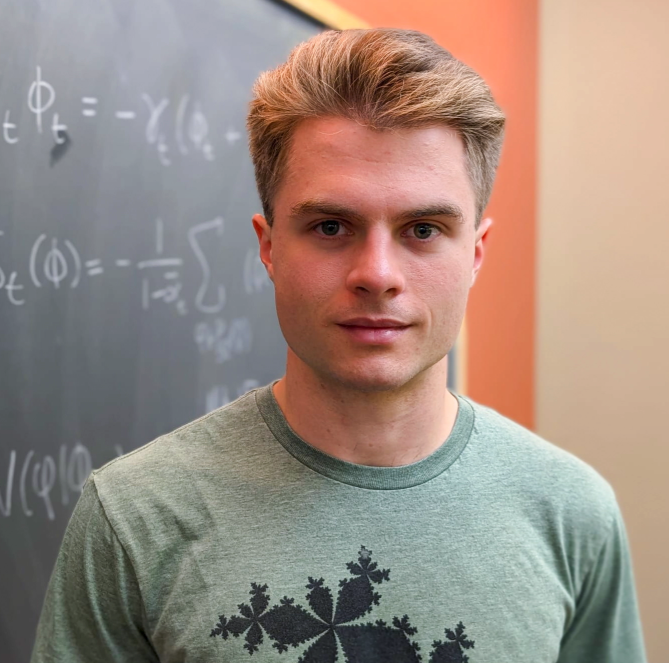

A deep dive into the mathematical foundations and analytic perspectives behind modern diffusion-based generative models.
Denoising diffusion models have achieved state-of-the-art results for generative modeling across images, video, and audio. Yet analysis of the training objective reveals a paradox: the objective admits a unique closed-form solution that is a function of the training data alone—and this solution can only reproduce training examples, exhibiting perfect memorization.
How, then, do deep diffusion models generalize? This tutorial explores the emerging family of analytical diffusion models that shed light on this question. Starting from the fundamentals, we build toward the current understanding of generalization mechanisms—score smoothing, inductive biases of neural architectures, training dynamics, and data geometry—all through the lens of optimal denoising.
The tutorial combines lectures with hands-on Jupyter notebook sessions so that attendees can run experiments, probe the theory, and build intuition firsthand.

The tutorial runs for a full day and combines lectures with interactive hands-on sessions. The schedule below is preliminary and subject to minor adjustments.
| 8:30 – 8:45 |
Welcome and Introduction
Tutorial overview, diffusion crash course, and notation.
All speakers
|
| 8:45 – 9:30 |
Hands-on: Paradoxes of Diffusion Models
Interactive experiments with closed-form score denoisers, optimal sampling, memorization, and training-set stability.
Chenyang Yuan
|
| 9:30 – 9:45 | Break |
| 9:45 – 10:45 |
Fundamentals of Diffusion Models
Forward and reverse processes, score matching, denoising objectives. Our analytical lens: studying the denoiser.
Chenyang Yuan
|
| 10:45 – 11:00 | Break |
| 11:00 – 12:00 |
Score Smoothing and Effective Linear Structures
How underfitting leads to score smoothing. Connections to linear models and closed-form analysis.
Christopher Scarvelis
|
| 12:00 – 1:30 | Lunch |
| 1:30 – 2:30 |
Wiener Filters and Analytical Denoisers + Hands-on
Data covariance, Wiener filters, locality, and PCA-based denoisers. Hands-on experimentation with the Analytic Diffusion Studio.
Artem Lukoianov
|
| 2:30 – 3:00 |
Guidance and Analytical Models
Convolutional inductive biases, equivariance, and how architecture enables creativity beyond the training set.
Mason Kamb
|
| 3:00 – 3:15 | Break |
| 3:15 – 4:15 |
Invited Talk
Speaker to be announced.
|
| 4:15 – 4:30 | Break |
| 4:30 – 5:00 |
Open Questions and Discussion
Panel discussion on open problems, future directions, and audience Q&A.
All speakers
|
Analytic Diffusion Studio is a modular codebase for training-free analytical diffusion models.
Use it to reproduce the methods discussed in this tutorial, run your own experiments, or build new analytical denoisers—no training required, just uv run.
$ git clone https://github.com/analytic-diffusion/analytic-diffusion-studio.git $ cd analytic-diffusion-studio $ uv run generate.py --config configs/pca_locality/celeba_hq.yaml